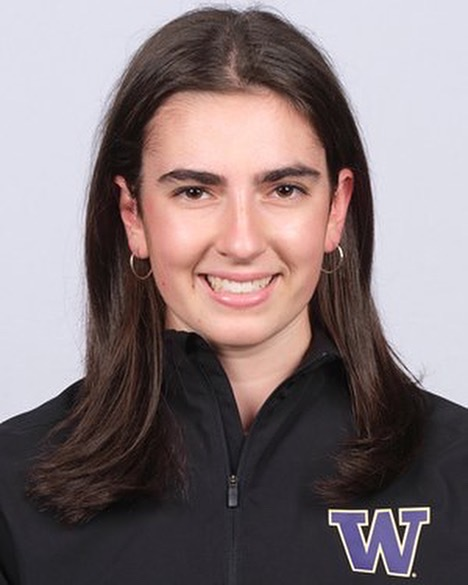
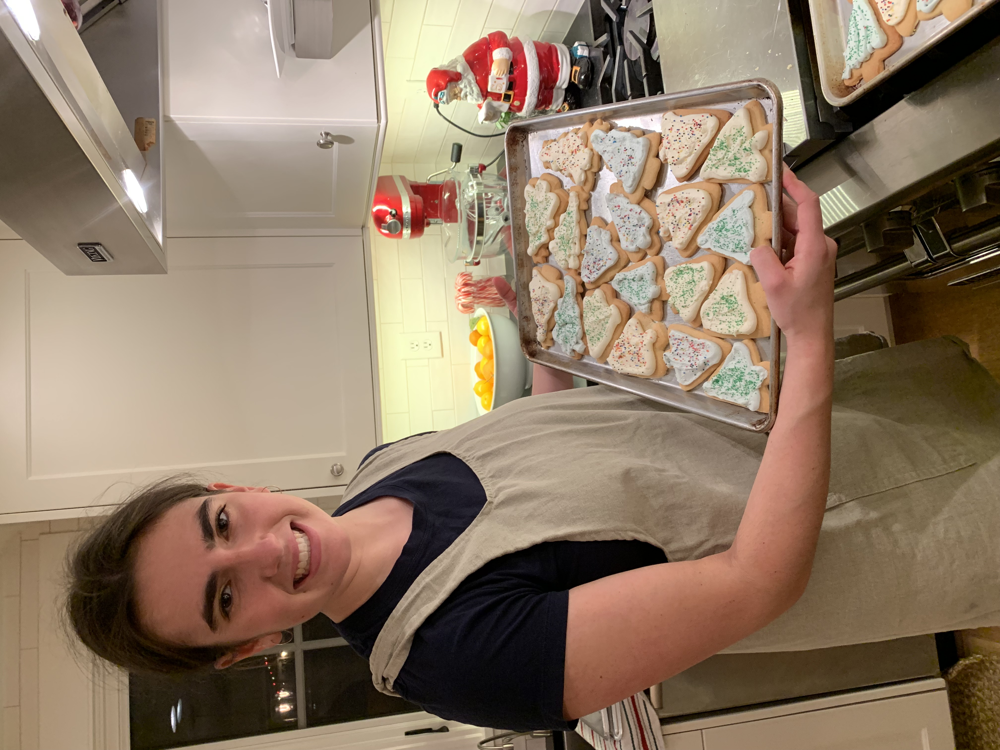

Hi! I'm Claire
I'm a junior at the University of Washington where I am studying
Human-Centered Design & Engineering with a focus in Human-Computer Interaction. I am a
member of the Women's Rowing team at UW, where I currently serve as a Team Culture
Officer on the Varsity Boat Club leadership team.

I found a love for programming through HCDE, and took my first coding class last fall.
Since then, I have pursued deeper knowledge and mastery of OOP languages, data structures,
and algorithms in addition to my engineering courses, and recently completed a Web
Programming class in fall quarter that enabled me to build this portfolio website from
scratch! I am excited to move forward in the field of user-centered design with my passion
for programming to work towards building user-friendly, intuitive interfaces that are both
visually appealing and efficiently implemented. I have a lot more to learn, but I am
enjoying every day of the process and figuring out how I can use my skills for good!

Outside of rowing and school, I am an avid outdoorswoman and love to be in the kitchen
and the garden. I especially love to nordic ski in the Methow Valley and backpack in the
Cascades. The newest dessert I learned to make was tiramisu, as I was lucky enough to be
mentored by my Italian roommate!